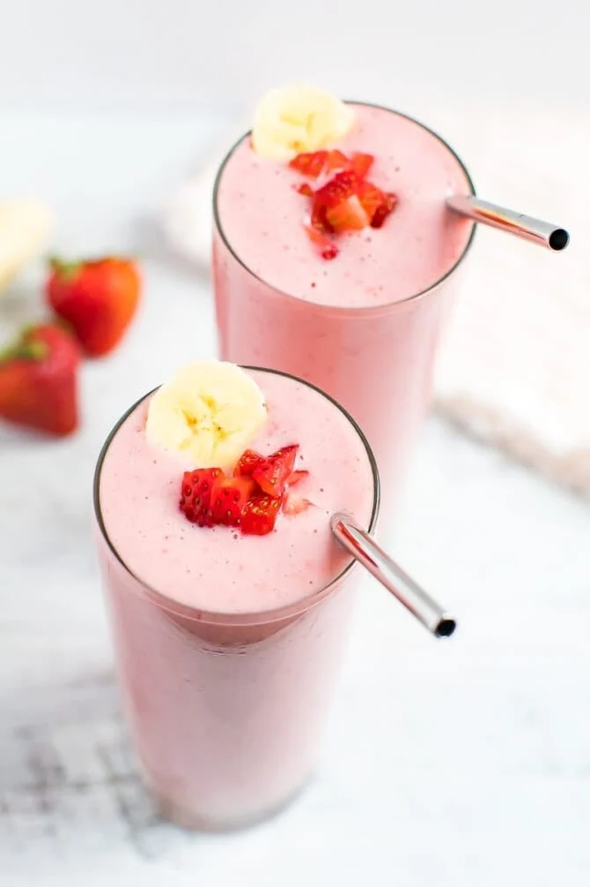

Strawberry Banana Smoothie

Description:
A strawberry banana smoothie is a healthy and tasty snack that is rich with carbohydrates and protien.
This tasty drink is made by combining frozen strawberrys and bananas as well as milk to enhance the flavor.
Ingredients:
- 1 1/2 cups vanilla yogurt
- 2 bananas, cut up
- 1/2 cup forzen strawberries
- 2 tablespoons wheat germ
- 1 tablespoon honey
Steps:
- Combine yogurt, bananas, strawberries, wheat germ, and honey in a blender; blend until smooth, about 1 minute.